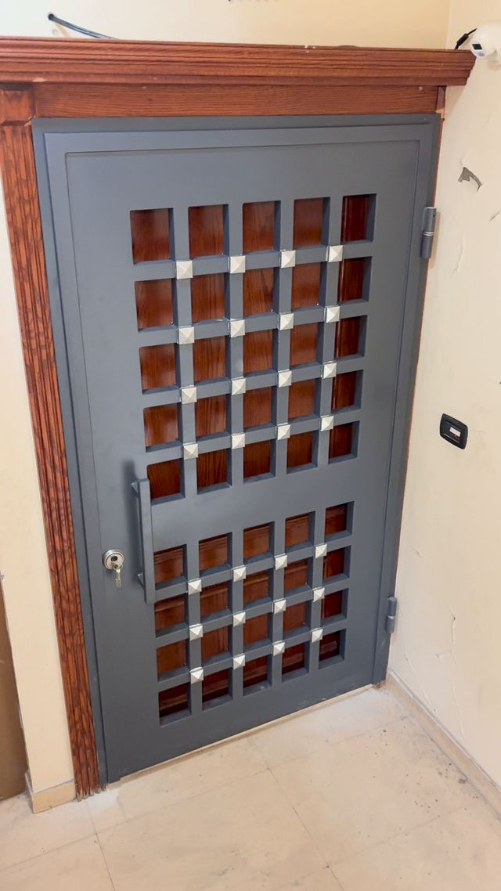

Steel security doors
Entrance doors and grille doors in steel, including security doors fitted in front of an existing wooden door, painted and finished to match the entrance.
Metal solutions. Solid trust.
FCB For Metal — Fouad Chamsi Bacha For Metal Works — designs, fabricates and installs steel security doors, sliding gates, gate automation and custom metal work for homes and buildings.

What we make
Every piece is measured on site, built in our workshop and installed by our own team.
Entrance doors and grille doors in steel, including security doors fitted in front of an existing wooden door, painted and finished to match the entrance.
Driveway gates and pedestrian doors in steel, with decorative laser-cut side panels and matching pillars.
Motors, gear racks, ground rails and control boxes for sliding gates, installed and wired on site.
Steel security grilles and protection for windows and openings.
Laser-cut panels, screens and room dividers in steel.
Cutting, welding, grinding and painting for one-off steel pieces made to your measurements.
Our projects
All photos are of FCB's own work.





About us
Founded in 1985, FCB is a steel manufacturing workshop supplying customers with internal and external metal work.
Our workshop in Tarik El Jdide, Beirut, cuts, welds, grinds and paints every door, gate and panel we deliver. The same team that builds your piece measures the opening first and installs it on site.


Contact
Send photos and rough measurements on WhatsApp, or call us to arrange a visit.
Please call or message before visiting the workshop.